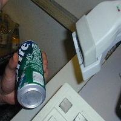
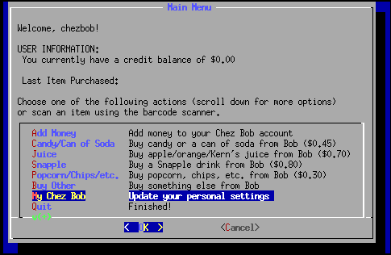
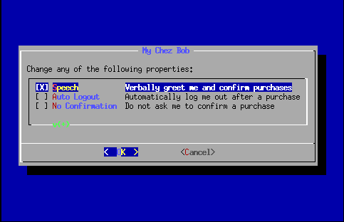
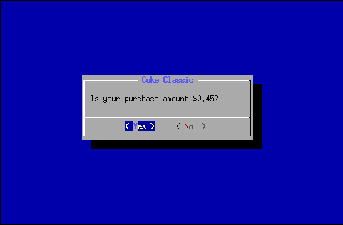
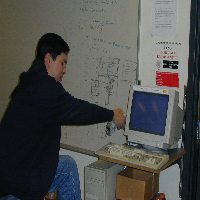
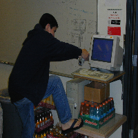

I. Introduction
Welcome to Chez Bob 2001! The famed CSE lounge self-checkout system is now
even better. Just check out some of the new features:
- Barcode Scanning: That's right, there's a barcode scanner right
next to the terminal. You can log into the system and purchase products
using the barcode scanner. This guide will show you how!
- Speech Synthesis: You can configure Bob to verbally greet you
and confirm your purchases!
- Inventory Tracking: No more wasted trips to the lounge for your
favorite snacks. Just go
here and
check out the current inventory of every Chez Bob product!
Read on to discover how you can take advantage of these new features.
It's easy!
II. Getting Started
- If you're an existing user go ahead and log into the system using your
login name (e.g., "chezbob"). If you're a new user, type in a new user name.

- The main screen hasn't changed much. You can still purchase products
using the old "Candy/Can of Soda", "Snapple", and "Popcorn" options. In
fact, the new system can be used exactly like the old system, so
if you're reluctant to change, we're not going to force you to use the
new features.

- Let's be a little more adventerous and purchase something using the
barcode scanner. Just follow these three simple steps after logging in:

| 
| 
|
- Grab your favorite drink or salted snack.
- Find the barcode on the product. If it's a can of soda, you *must*
wipe any perspiration from the barcode before scanning it; the scanner
can sometimes have trouble reading the barcode if you don't. Dave
Sacerdoti (above) finds the fabric from a lounge chair most appropriate
for this task. Way to go, Dave.
- Place the barcode beneath the barcode scanner. The scanner will
emit a red beam once the item is close enough. When you hear the scanner
beep once, remove the item from under the scanner.
-
After scanning an item, Bob will display a confirmation screen with the
product's name at the top. Hit OK if you want to purchase the item.
Congratulations, you just purchased your first item using the barcode
scanner! Wasn't that easy? Let's now look at how Bob can talk to us.
III. Talk to me, Bob!
-
Log into your account and select the "My Chez Bob" option from the main
menu. This option allows us to change our personal settings.

- On the "My Chez Bob" window select "Speech" by pressing the space
bar. Hit OK to leave the "My Chez Bob" menu and return to the main menu.

- From the main menu, select "Nickname." You'll have to scroll past
"Quit" to get to it. Bob will then prompt you to enter your nickname.
Hit OK when you're done.

That's it! From now on, Bob will greet you when you log in and verbally
confirm your purchases! If Bob's voice ever gets on your nerves, simply
unselect the "Speech" option from "My Chez Bob."
The next section talks about some features for completing your
transactions in a minimal amount of time.
IV. I'm in a Hurry!
Keyboards? We don't need no stinking keyboards! Read on to see how you
can set up a keyboardless session with Bob.
- From the main menu, choose the "Barcode ID" option. Then use the
barcode scanner to scan a personal barcode of your choice. Products
from Chez Bob won't work, so don't bother trying. A good choice might
be the barcode on the back of your UCSD ID card. Once you're done, you
can log into AND out of the system by scanning your personal barcode.
- Select "My Chez Bob" from the main menu. Enable the "No confirmation"
option. This means that you won't see the following screen after
purchasing a product:

Instead, Bob will automatically deduct the appropriate amount from your
account.
- For maximum efficiency you might want to select the "Auto Logout" option
from the "My Chez Bob" menu. This will log you out of the system after you
purchase EXACTLY ONE ITEM.
- Some users do not even log into the system and instead pay for their
item with cash. This can potentially throw off the inventory tracking
feature of the new system. To prevent this, please scan the "Pay with
Cash" barcode at the login screen. You can then scan your item and leave.
Bob then updates the inventory of that particular product.
V. Do Not's
The barcode scanner is not a toy. Even though it uses a relatively harmless
Class I laser, you should never stare directly into the beam. In addition,
you should never attempt to handle the scanner or try to remove it from its
stand. Nice try, Mr. Seng.

| 
| 
|
VI. Experimental
We thought it might be useful if Chez Bob could also be used to check
out books from the lounge library. This feature is not fully implemented.
We entered just a small number of books into the system; check out
this page for a listing.
There's an option at the very bottom of the main menu labeled
"Checkout a book." Although it doesn't do very much right now, it could
easily be setup to record the date and time a particular book was checked out.
In a sense, everything about the new system is an experiment. We would
love to hear feedback about any of the new features. Please send
comments to Mike Copenhafer (mcopenha@cs.ucsd.edu) and Alan Su
(alsu@cs.ucsd.edu).
|